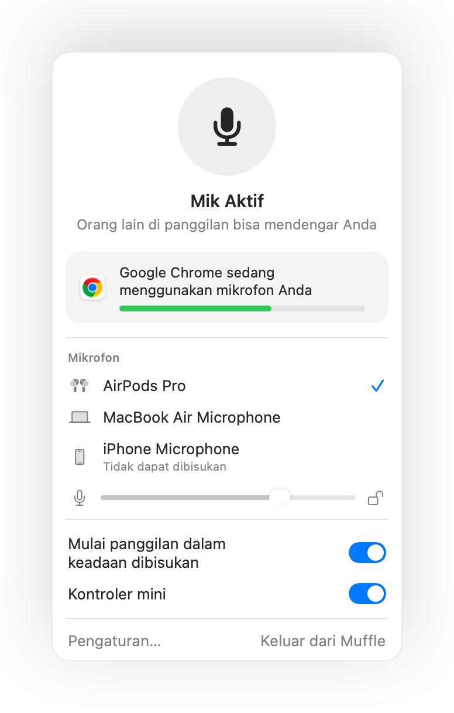
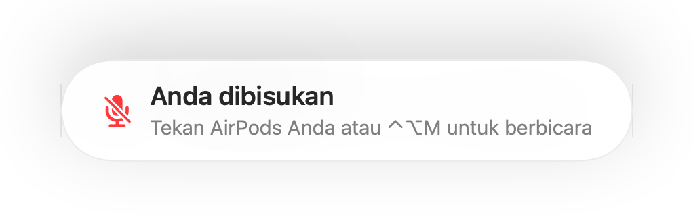
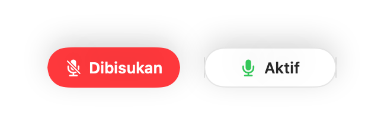
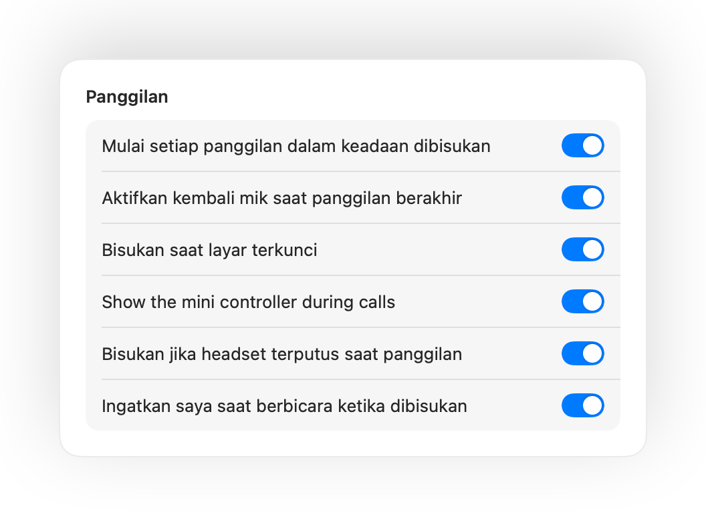

Bisukan mikrofon Mac Anda dari mana saja.
Tekan AirPods Anda atau satu pintasan keyboard. Muffle mematikan mikrofon itu sendiri, sehingga Google Meet, Zoom, Teams, Slack, dan semua app lain hanya menerima hening.
Gratis selama 3 hari. Lalu satu kali pembayaran, tanpa langganan. Untuk macOS 14 Sonoma dan lebih baru.

Berfungsi dengan setiap app yang menggunakan mikrofon Anda
- Google Meet
- Zoom
- Microsoft Teams
- Slack
- Discord
- FaceTime
- Webex
- Skype
- SoWork
- Gather
- Chrome
- Safari
- Arc
- Edge
- Firefox
Muffle membisukan mikrofon di tingkat perangkat keras, jadi tidak masalah app, browser, atau tab mana yang menggunakannya.
Semua yang seharusnya bisa dilakukan Mac saat panggilan
Tekan AirPods Anda untuk membisukan
Saat panggilan apa pun, tekan batang sekali untuk membisukan dan tekan lagi untuk mengaktifkan suara. Ini bahkan berfungsi di Chrome, tempat Google Meet dan panggilan web lainnya mengabaikan tekanan AirPods.
Satu pintasan untuk semua app
Control-Option-M membisukan Anda di mana saja, bahkan saat panggilan berada di tab latar belakang. Tahan untuk berbicara saat dibisukan, lepaskan untuk membisukan lagi.
Pengingat “Anda dibisukan”
Mulai berbicara saat dibisukan dan Muffle akan memberi tahu Anda, sebelum Anda menjelaskan seluruh ide tanpa ada yang mendengar.
Panggilan otomatis
Mulai setiap panggilan dalam keadaan dibisukan, aktifkan kembali mik saat panggilan berakhir, dan bisukan kapan pun Anda mengunci Mac.
Selalu tahu apakah Anda aktif
Tombol melayang kecil menampilkan status mik Anda saat panggilan. Klik untuk membisukan atau mengaktifkan suara.
Tingkat mikrofon Anda tetap stabil
Chrome, Zoom, dan Teams mengubah tingkat mikrofon Anda sendiri. Kunci tingkatnya dan Muffle akan mengembalikannya.
Aman saat AirPods kehabisan daya
Jika headphone Anda terputus di tengah panggilan, Muffle langsung membisukan sebelum panggilan beralih ke mikrofon Mac dan menyiarkan seluruh ruangan.
Pintasan dan Pusat Kendali
Bisukan dari app Pintasan, Siri, Stream Deck, Raycast, atau tombol di Pusat Kendali.
Tekan untuk berbicara atau tekan untuk membisukan
Pilih cara kerja pintasan Anda: ketuk untuk mengalihkan, tahan untuk berbicara, atau tahan untuk membisukan saat batuk. Tambahkan tombol bisukan dan aktifkan suara terpisah, atau tahan satu tombol seperti ⌥ Kanan atau tombol tetikus tambahan.
Dibisukan lagi saat Anda diam
Mengaktifkan suara untuk bicara sebentar? Jika Anda kemudian diam selama durasi yang dipilih, Muffle akan membisukan Anda lagi.
Mikrofon terbaik untuk ruangan
Dengan AirPods di ruangan yang hening, Muffle menyarankan mikrofon Mac Anda agar AirPods memutar panggilan dalam kualitas penuh. Saat bising, Muffle menyarankan mikrofon AirPods.
Tidak mungkin terlewat
Pendaran hijau atau merah di sekitar layar, ikon bilah menu berwarna, suara, dan tombol melayang. Aktifkan yang Anda sukai.




Atur dalam satu menit
- Instal Muffle dari Mac App Store dan izinkan akses mikrofon.
- Bergabunglah ke panggilan di app apa pun, seperti biasa.
- Tekan AirPods Anda, tekan Control-Option-M, atau klik ikon bilah menu untuk membisukan.
Dirancang menjaga privasi
Muffle tidak pernah merekam, menyimpan, atau mengirim audio. Muffle hanya menyalakan dan mematikan mikrofon Anda serta membaca tingkat suaranya. Tanpa akun, tanpa analitik, tanpa pelacakan.
Pertanyaan umum
Apakah Muffle berfungsi dengan Google Meet di Chrome?
Ya. Chrome tidak meneruskan tekanan bisukan AirPods ke panggilan web, jadi Muffle menangkapnya dan membisukan mikrofon itu sendiri. Hal yang sama berlaku untuk panggilan apa pun di tab browser.
Apakah orang lain akan melihat saya dibisukan?
App panggilan Anda mungkin masih menampilkan mik Anda aktif, karena Muffle mematikan mikrofon secara langsung dan bukan tombol app. Orang lain tetap mendengar hening. Ikon Muffle di bilah menu berubah menjadi merah saat Anda dibisukan.
Model AirPods mana yang berfungsi?
AirPods Pro, AirPods 3 dan lebih baru, serta AirPods Max, ditambah model Beats dengan kontrol panggilan. Pintasan keyboard dan bilah menu berfungsi dengan mikrofon apa pun.
Apakah berfungsi dengan Zoom, Teams, Slack, dan Discord?
Ya. Muffle berfungsi dengan setiap app di Mac Anda yang menggunakan mikrofon, baik app desktop maupun panggilan di browser.
Apakah ada biaya langganan?
Tidak. Coba semua fitur gratis selama 3 hari, lalu buka kunci Muffle dengan sekali pembelian.
Mengapa Muffle memerlukan akses mikrofon?
macOS hanya meneruskan tekanan AirPods ke app yang sedang menggunakan mikrofon, jadi Muffle menjaga koneksi diam tetap terbuka saat panggilan. Tidak ada yang direkam.
Apa yang terjadi jika saya keluar dari Muffle saat dibisukan?
Muffle mengaktifkan kembali mikrofon Anda saat app ditutup, sehingga Anda tidak akan terjebak dalam keadaan bisu.
Versi macOS mana yang didukung?
macOS 14 Sonoma dan lebih baru. Tombol Pusat Kendali memerlukan macOS 26 atau lebih baru.
Apakah Muffle memiliki fitur push to talk?
Ya. Pilih Tekan untuk berbicara di Pengaturan dan tahan pintasan Anda untuk berbicara. Anda juga dapat menahan satu tombol seperti ⌥ Kanan atau fn, atau tombol tetikus tambahan.
Mengapa suara AirPods saya terdengar lebih buruk saat panggilan?
Saat panggilan menggunakan mikrofon AirPods, AirPods beralih ke mode panggilan yang memutar audio dalam kualitas lebih rendah. Di ruangan yang hening, Muffle menyarankan mikrofon Mac Anda sebagai gantinya, sehingga AirPods tetap memutar dalam kualitas penuh.
Panduan
- Cara membisukan Google Meet dengan AirPods di MacMenekan AirPods tidak membisukan Google Meet di Chrome di Mac. Ini cara bisukan Meet dengan AirPods, pintasan, atau bilah menu di tab mana pun.
- Cara membisukan Zoom dengan AirPods atau pintasan di MacBisukan mikrofon Zoom di Mac dengan AirPods atau pintasan global, bahkan saat jendela Zoom tidak aktif. Berfungsi di app Zoom dan di browser.
- Cara membisukan Microsoft Teams dengan AirPods di MacBisukan Microsoft Teams di Mac dengan AirPods, pintasan global, atau bilah menu. Berfungsi di app Teams dan di Teams lewat browser.
- Cara membisukan huddle Slack dari app mana pun di MacBisukan huddle Slack di Mac dari app mana pun dengan pintasan global atau AirPods. Tidak perlu repot mencari jendela huddle.
- Push to talk dan pintasan bisukan global untuk Discord di MacGunakan satu pintasan global push to talk dan bisukan Discord di Mac, atau bisukan dengan AirPods. Berfungsi di app Discord dan browser.
- Cara membisukan Webex dari app mana pun di MacBisukan rapat Webex di Mac dengan satu pintasan global atau AirPods Anda, bahkan saat Webex bukan jendela aktif.
Jawaban praktis dan ringkas untuk membisukan mikrofon Anda di Mac, di setiap app.
Tak perlu lagi mencari-cari tombol bisukan.
Muffle gratis dicoba selama 3 hari.
Segera hadir di Mac App Store